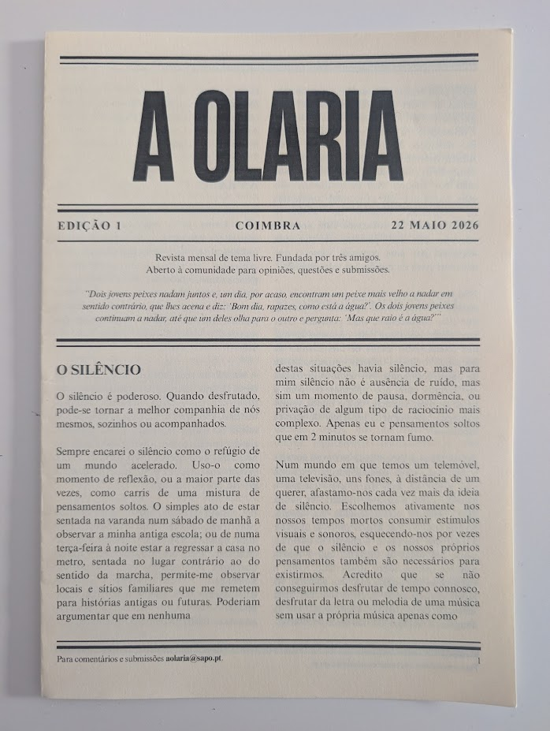
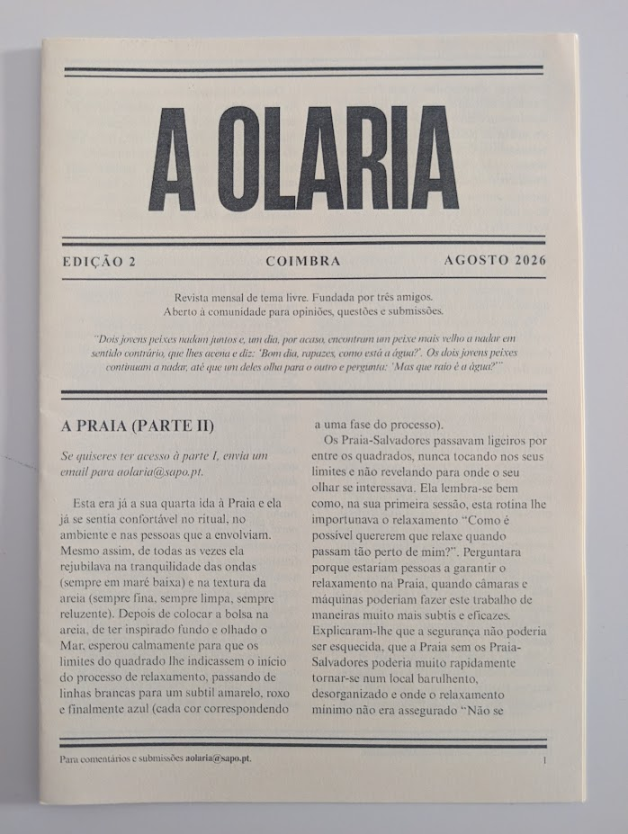
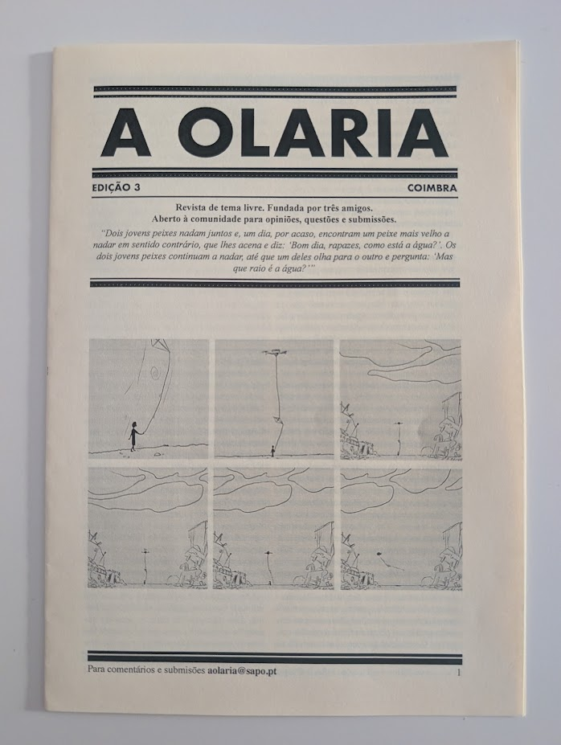

EDIÇÃO 1 - MAIO 2026
- O SILÊNCIO
- A PRAIA
- TU DEVIAS SENTIR TE MAL.
Por hora, não disponibilizamos as edições passadas d'A Olaria de forma digital, propositadamente. Para receberes uma edição antiga, escreve-nos para o nosso email (aolaria@sapo.pt) ou vê na página de subscrições como podes subscrever para garantires acesso às próximas edições.


